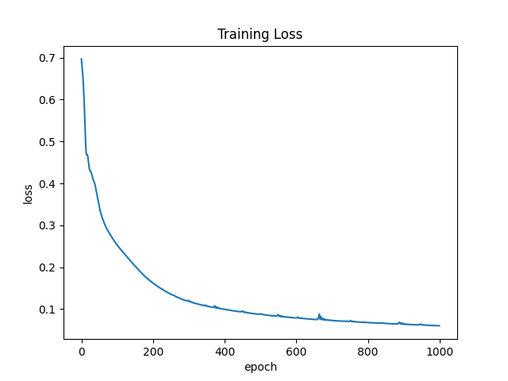
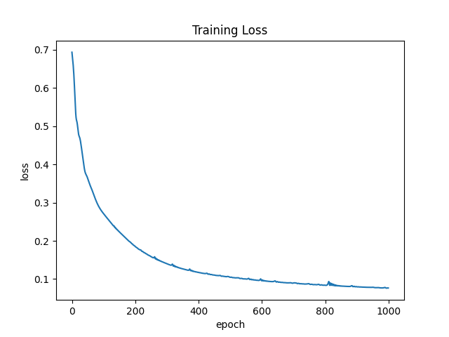
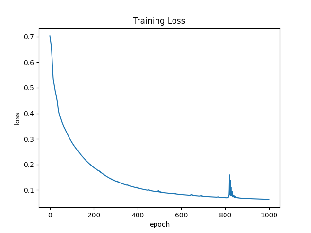
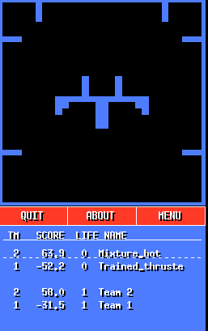
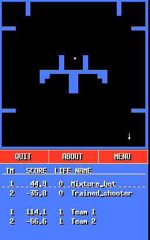
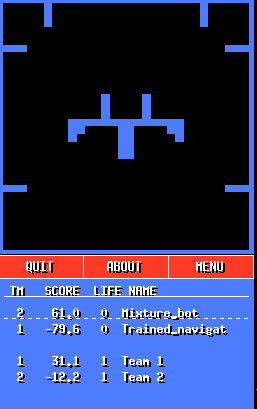
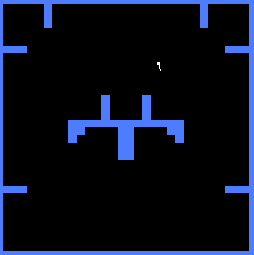

Combined Policy Imitation Learning on Specialized GA Bots
Train specialist GA experts, collect large-scale demonstrations, train expert networks, and combine them with a gating policy.
This project builds three genetic-algorithm specialists (Thruster, Shooter, Navigator), records millions of ticks of structured state-action data, trains per-expert neural imitation models, and produces a mixture-of-experts combined policy that blends specialist strengths.
Overview
Goal: produce an end-to-end imitation policy for X-Pilot that controls all four discrete actions (thrust, turnLeft, turnRight, shoot). Explore whether combining multiple specialized experts yields a stronger and more robust policy than single-expert imitation.
Map
lifeless.xp
Benchmark
Genetic Algorithms trained and evaluated against a rule-based expert agent (Derin’s Expert).
Key outcome
The combined neural policy is smoother and outperforms the separate neural experts, while GA agents remain strong baselines.
Specialized GA Experts
Three specialized Genetic Algorithm agents were evolved to emphasize different behaviors while maintaining survival competency. A separate survivor GA was run first to seed robust survival behaviors into the specialist populations.
Survivor GA, purpose and impact
Before evolving specialists, a Survivor GA was trained to optimize longevity in the arena. The survivor produced reliable, high-survival chromosomes that were then injected into specialist GA populations as proven survivors. This seeding provided three benefits: faster convergence, fewer wall-crash degenerate runs, and a stable baseline so specialists could focus on their objective (thrusting, shooting, or navigation) without losing survival competence.
Thruster (Fitness: thrust usage and score gain)
Trained 150 generations with a mixed initial population (118 random + 10 survivor chromosomes).
Learned strong survival behavior, no wall crashes.
Used thrust only when needed, resulting in higher overall speed.
Developed a strategy of turning near walls to align perpendicular before thrusting.
Surprisingly learned to shoot and dodge bullets well, even without score-based fitness.
Scored 4800 vs 4700 against the expert agent.
Prioritized avoiding wall crashes over avoiding shots.
No consistent domination, bots frequently rotated between 1st and 2nd place.
Thruster GA
Shooter (Fitness: score)
Trained 150 generations. Learned precise shooting, strong defensive positioning, and wall avoidance.
Even during training, the score difference between expert system and training bots was 900 points (600 vs -300)
The bots learnt to move slowly.
Has amazing wall avoidance.
Comes right in front of the enemy and stops. Exploits the fact that aimdir doesn’t work well when bot is not moving. keeps on shooting and moves back due to backward force from shooting.
Sometimes crashes into enemy but easily dominates the match against expert system.
Shooter GA
Navigator (Fitness: distance travelled)
Trained 120 generations. Fast, exploratory, excellent at traversing the map and avoiding walls
Quickly moves between top and bottom section.
Fastest out of all GAs.
Very good wall avoidance.
Good Shooting.
More prone to getting shot.
Unlike thruster, it accelerates in open space.
Very good at shooting while moving past the enemy.
Navigator GA
Data Collection
Large-scale per-tick logs were recorded while each GA expert competed against the rule-based agent. Logs contained raw variables and were normalized into 17 input features for training.
Rows collected
Shooter: 5.0M · Navigator: 5.5M · Thruster: 4.8M (≈15M total)
Recording protocol
Logs captured 21 raw variables per tick and were converted to 17 normalized inputs (range 0–1). Demonstrations span continuous competitive play for high-quality behavior coverage.
Inputs & outputs
Inputs: 17 structured features → Outputs: 4 discrete actions (thrust, turnLeft, turnRight, shoot).
Input features (17)
- agent_heading
- agent_tracking
- agent_speed
- agent_aim
- shot_alert
- front_dist
- back_dist
- back_left_dist
- back_right_dist
- closest_dist
- furthest_dist
- closest_angle
- furthest_angle
- heading_tracking_diff
- closest_diff
- furthest_diff
- aim_diff
Imitation Models
Per-expert neural networks were trained on each expert’s demonstrations. Architectures balance capacity and dataset size to capture behavior patterns.
Architectures
All expert networks use 4 hidden layers. The first hidden layer for Thruster and Shooter is 256 neurons, followed by 128 → 64 → 32. All layers are fully connected and output per-action probabilities.
Navigator had 5.5 million rows so Neural Network size had to be cut down to make it run. The first hidden layer for Navigator is 196 neurons, followed by 128 → 64 → 32. All layers are fully connected and output per-action probabilities.
Shooter (neural)
Good at wall avoidance.
Accelerates when needed.
Turns towards enemy and shoots.
Shoots Abruptly.
Bullet avoidance is not impressive.
Can come out of top corners.
Can crash at very tough spots.
Thruster (neural)
Good at wall avoidance.
Makes very good use of thrust, just like GA.
Shoots Abruptly.
Can come out of top corners.
Can crash at very tough spots.
Navigator (neural)
Good at wall avoidance.
Accelerates alot.
Fastest Neural Network Bot.
Bullet avoidance is not impressive.
Can come out of top corners.
Can crash at very high speeds.
Training setup
Optimizer: Adam · Learning rate: 0.001 · Epochs: 1,000 · Train/test split: 80/20. Loss tracked and saved; early stopping applied when necessary.
Per-expert test accuracies
Navigator
- Thrust: 95.90%
- TurnLeft: 98.04%
- TurnRight: 97.93%
- Shoot: 98.99%
- Exact match (all 4): 92.52%
Shooter
- Thrust: 96.52%
- TurnLeft: 97.99%
- TurnRight: 97.91%
- Shoot: 99.17%
- Exact match (all 4): 93.39%
Thruster
- Thrust: 94.50%
- TurnLeft: 97.84%
- TurnRight: 97.77%
- Shoot: 99.14%
- Exact match (all 4): 91.08%
Notes
Per-action accuracies show strong imitation of expert policies. Exact-match rates indicate how often all four actions match expert simultaneously on the test set.
Shooter loss

Thruster loss

Navigator loss

The loss curves looked very smooth (except for the small peak for Navigator).
Combined Policy (Mixture of Experts)
A gating network learns soft weights over the three experts. Each expert emits per-action probability vectors; the final action is the weighted sum of expert outputs. The result is a smooth, state-dependent blending of specialist behaviors.
Gating & blending
The gating network receives the same 17 inputs and outputs a softmax distribution [w₁,w₂,w₃]. Final action probabilities are a = w₁·a₁ + w₂·a₂ + w₃·a₃, then converted to discrete actions by argmax for deployment.
Behavioral effects
- Smoother movement and decision patterns, less abrupt shooting than single-expert networks.
- Stronger wall avoidance due to weighting of Navigator/Thruster when near obstacles.
- Better overall action selection in mixed scenarios; combined policy outperforms each neural expert in most neural-vs-neural matches.
Combined policy demo
The combined policy inherits the navigation and wall-avoidance strengths of Navigator/Thruster and the precision of Shooter.
It behaves much smoother than individual neural experts (fewer abrupt shots, better obstacle avoidance).
Neural-vs-neural matches the combined model consistently outperforms the separate neural experts.
In direct GA-vs-GA comparisons, the original GAs still outperform the combined neural policy.
The combined policy can also occasionally over-emphasize Navigator in open spaces and adopt risky high-speed movement.
Results & Comparative Evaluation
A set of comparisons and performance visualizations demonstrate the strengths and weaknesses of single expert neural networks and combined neural policies.
Bots fought against each other for 5 minutes in each match.
Combined Policy easily dominated the individual specialized Neural Networks
Thruster vs Combined

Combined Policy Won
63.9 VS -52.2
Shooter vs Combined

Combined Policy Won
44.9 VS -35.8
Navigator vs Combined

Combined Policy Won
61.0 VS -79.6
Training map (lifeless.xp)

Summary
The combined neural policy produces smoother, more balanced behavior and consistently beats the separate neural experts. Compared to GA agents, the combined neural agent shows strong imitation performance but GAs still hold advantages againt Neural Networks.
The project also showed that it is quite possible to make very good Imitation bots if we train them on enough data.
Conclusions & Future Work
- Fine-tune the combined policy with reinforcement learning (RL) to close the gap to GA performance.
- Improve gating architectures (contextual gating, hierarchical gating) for sharper expert selection.
- Test transfer and robustness across maps, opponent types, and noisy inputs.
- Explore distillation of the mixture into a single compact network for lower-latency deployment.
Contact
Muhammad Abdullah
COM 407 · Connecticut College
Email: mabdullah@conncoll.edu
GitHub: github.com/mabdullah1010